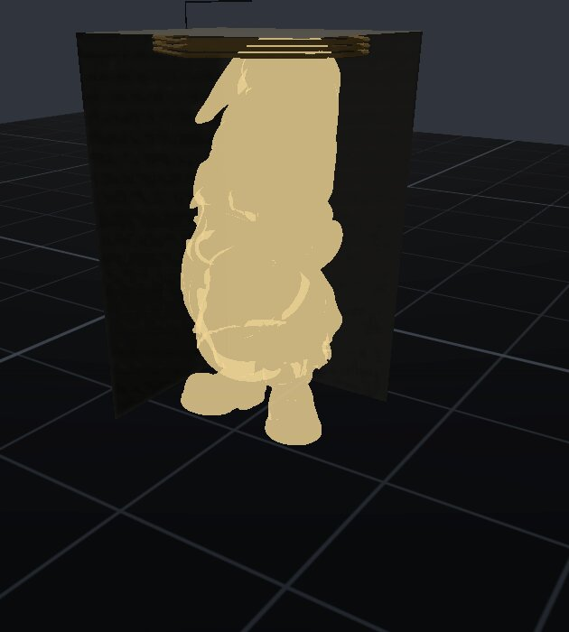

DIDO
Dido, queen of Carthage, was granted as much land as one oxhide could cover — so she cut the hide into a thin strip and enclosed a whole hill with it. Mathematicians still call the maximum-enclosure boundary problem "Dido's problem." This crate lives on exactly that boundary: given a closed outline, how much ground does the tool actually claim.
The boundary. Offsets and windings — the most land one hide can hold.

Dido — Crate Manual
Quickstart
# Cargo.toml
[dependencies]
dido = { path = "../Dido" }The central type is dido::Poly — a closed 2D polygon —
and its offset method:
use dido::{Poly, subtract};
let part = Poly::new(vec![[0.0, 0.0], [100.0, 0.0], [100.0, 50.0], [0.0, 50.0]]);
let toolpaths = part.offset(3.175); // grow by cutter radius (mm)
let pocket = part.offset(-3.175); // shrink — may split or vanish
let remaining = subtract(&toolpaths, &pocket); // boolean over polygon setsWhat it is
Compensation for the Leviathan Design Suite. The tool is not
infinitely thin: the drawn line and the cut line are different lines,
and this crate computes the difference — cutter comp for Hephaestus,
kerf for Iris, support regions for Jove. Thin seams over two proven
engines, no polygon math of our own: offsetting =
cavalier_contours, booleans = i_overlay. Arc
joins from offsetting are flattened to segments (1e-3 mm tolerance).
Sovereign, local-first; PolyForm Small Business licensed.
API surface
Poly { pts: Vec<[f64; 2]> }— closed polygon, straight edges, last point joins the first.Poly::new(pts).Poly::offset(delta) -> Vec<Poly>— positive grows, negative shrinks, regardless of input winding. May split into several polygons (shrinking a dumbbell) or return empty (shrinking past the middle).Poly::signed_area()(shoelace, positive = CCW),area(),is_ccw(),set_winding(ccw)— winding is how consumers tell outsides (CCW) from holes (CW).union(&[Poly], &[Poly]),subtract(..),intersect(..)— booleans over polygon sets, NonZero fill; results keep outer-CCW / hole-CW winding sois_ccw()still classifies them.
Consumers
Hephaestus (CAM) is the primary consumer — cutter-radius offsets for 2.5D pocketing and profiling. Iris takes kerf compensation for laser/plasma, and Jove uses the same offsets for resin support regions.
Known limits
offset()normalizes the input winding to CCW internally and does NOT restore the original winding on its output — a latent contract break for callers that feed CW holes through it. Open finding.- Arc flattening tolerance is a fixed
ARC_ERROR = 1e-3mm; becomes a parameter only when a consumer cares. - Polygons only: no arcs in, no arcs out (Kiri's engine was Clipper, so the consumers already expect flattened geometry).
- Degenerate results (< 3 points) are silently dropped from offset and boolean outputs.